Centos6 搭建Github Pages + Jekyll + Markdown
posted on 11 Apr 2016 under category translation
是否原创: 原创
原文链接: http://galengao.github.io
版权: 本文受 Creative Commons License 版权保护, 你可以在 Creative Commons Attribution NonCommercial NoDerives 2.5 License 下分发该文
rvm是用于安装ruby的，以下命令有时会解析不到那个地址，多尝试几次。
curl -L https://get.rvm.io | bash -s stable --ruby
source /usr/local/rvm/scripts/rvm
执行curl -L https://get.rvm.io | bash -s stable --ruby会报如下错误：
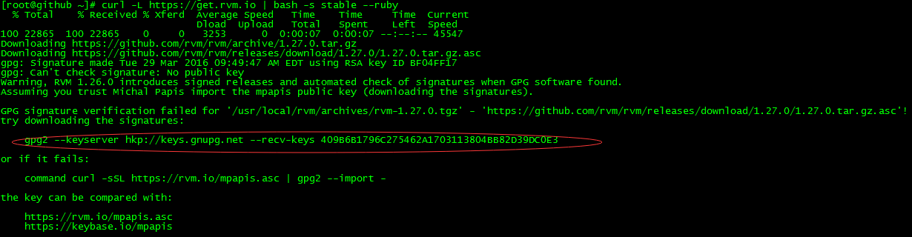
解决办法：
执行上面圈起来的语句，然后重新执行即可
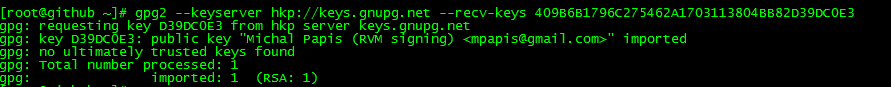
然后执行
curl -L https://get.rvm.io | bash -s stable --ruby
使其生效
source /usr/local/rvm/scripts/rvm
rvm -v 表示安装成功
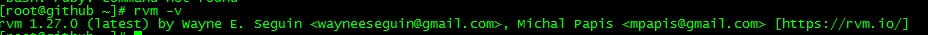
这里安装2.3.0版本的，因为后面的jekyll要2.0以上的
rvm install 2.3.0
rvm use 2.3.0
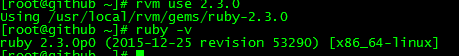
yum -y git
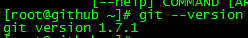
ssh-keygen -t rsa
回车，输入两次密码:
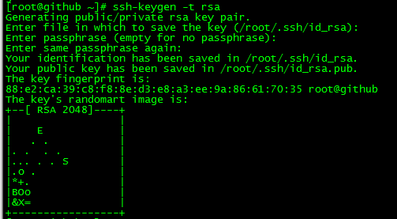
cat /root/.ssh/id_rsa.pub
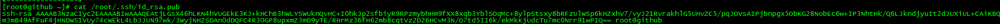
github页面右上角有一个[setting]设置 如下: 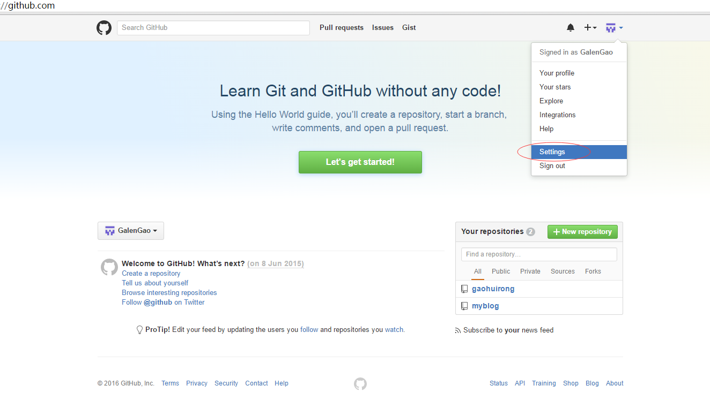
进去后点SSH那个选项 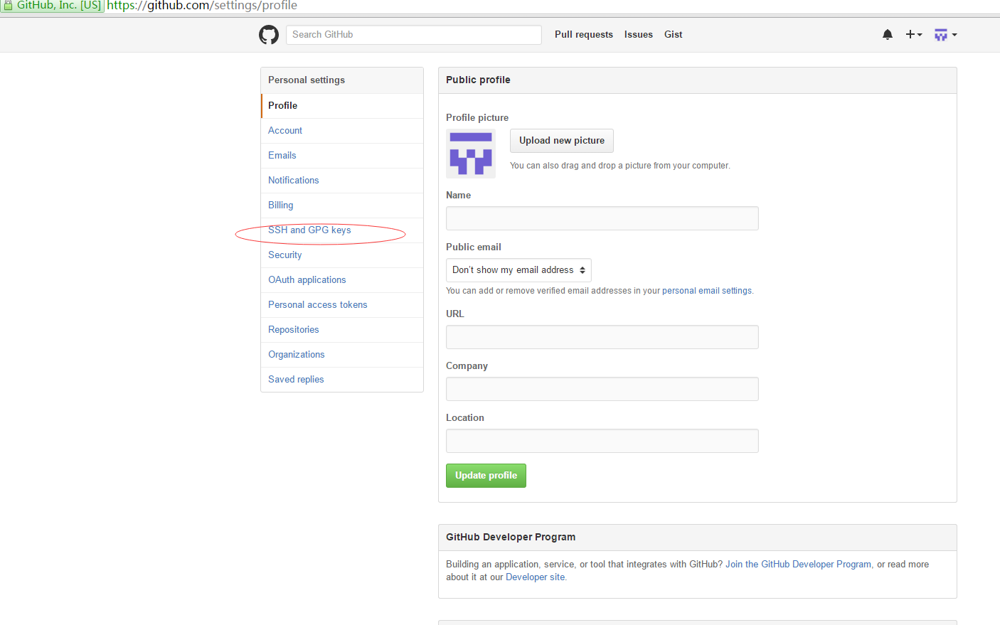
然后新建ssh 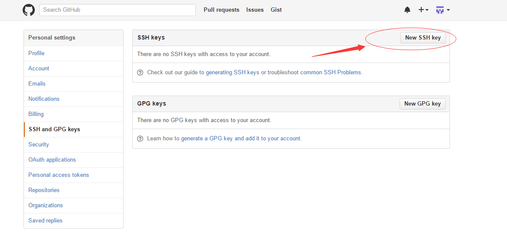
最后把上面的内容复制进去，title可以空起 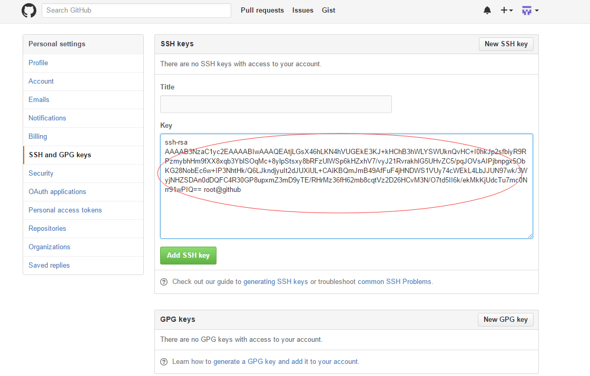
然后Add SSH key提交后，会让你再输一把你的github账号即可。
测试一下，输入ssh -T git@github.com，出现如下信息即可。箭头那输入密码
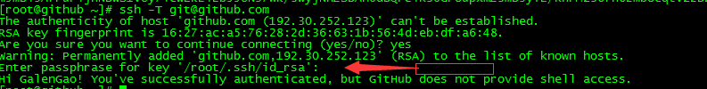
new repository
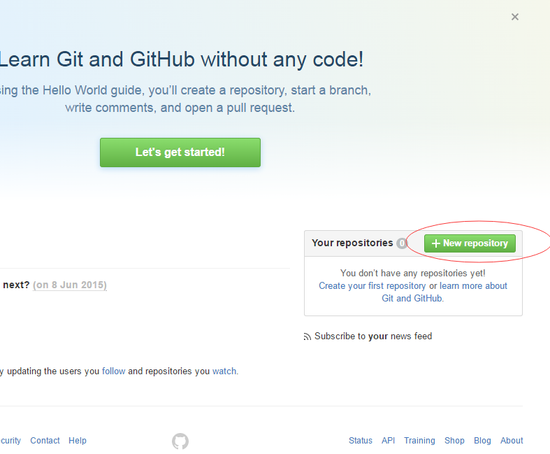
起个repository名，然后创建
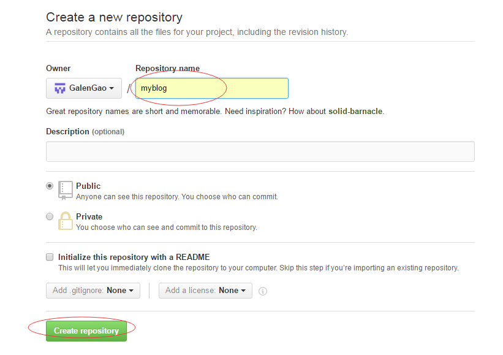
这时出现如下消息
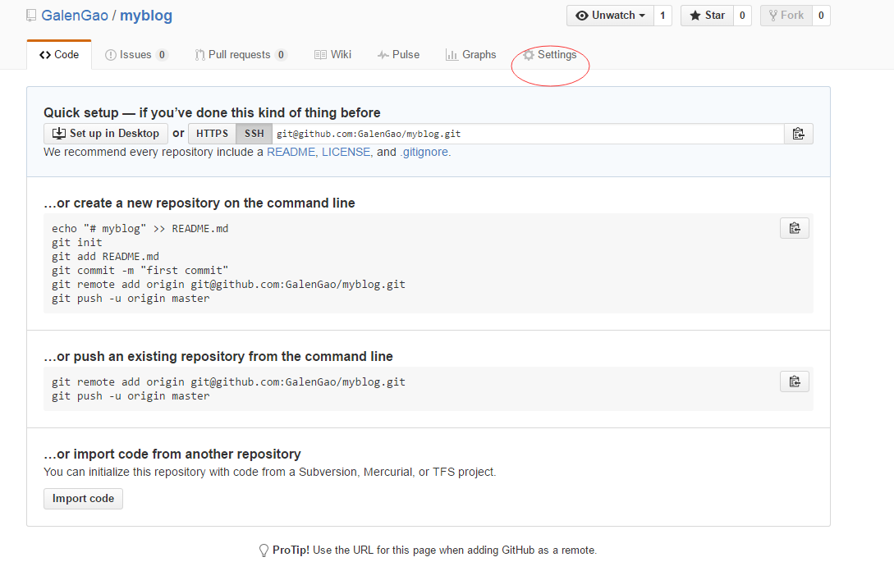
点击上面的setting后如下
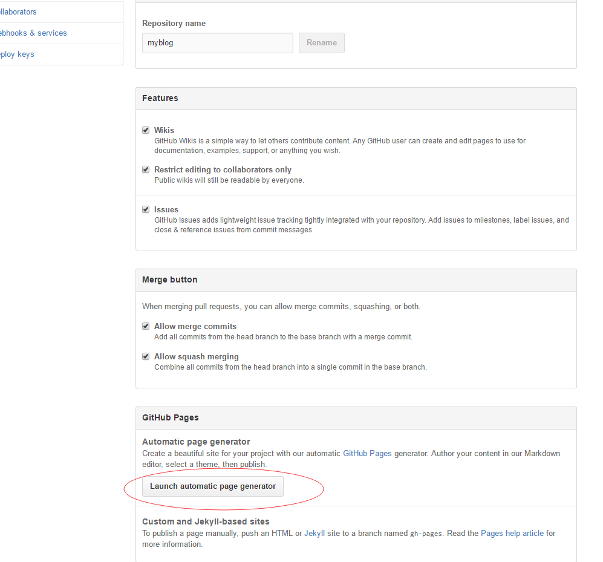
再点击上面的Launch automatic page generator
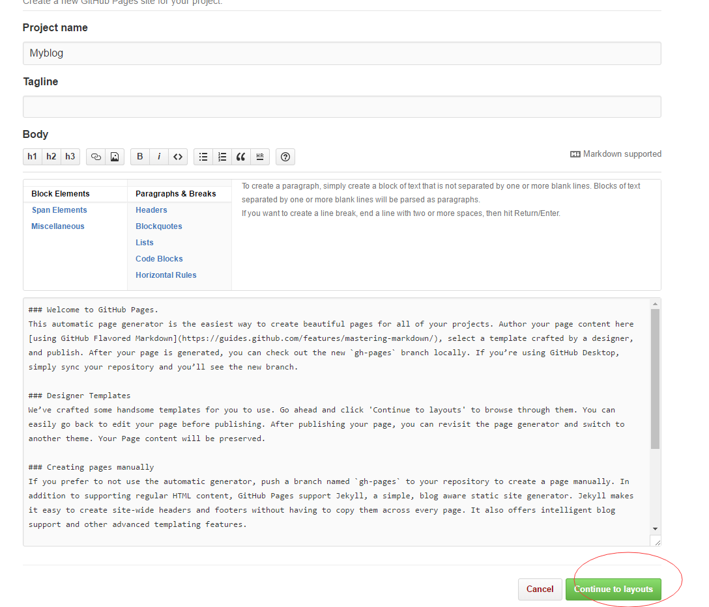
这时上面都不用管，继续点击上面的continue to layouts
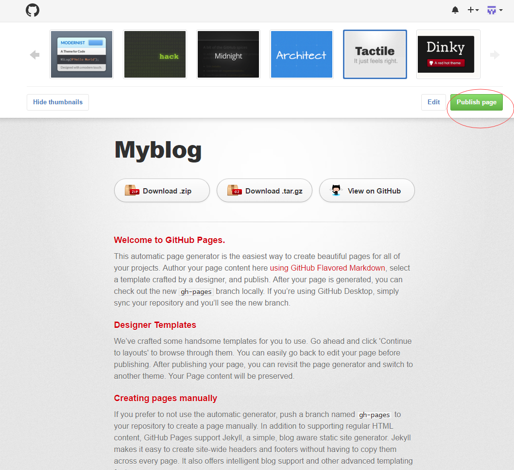
选中一个主题后点击上面的Publish page即可，会出现一个地址。
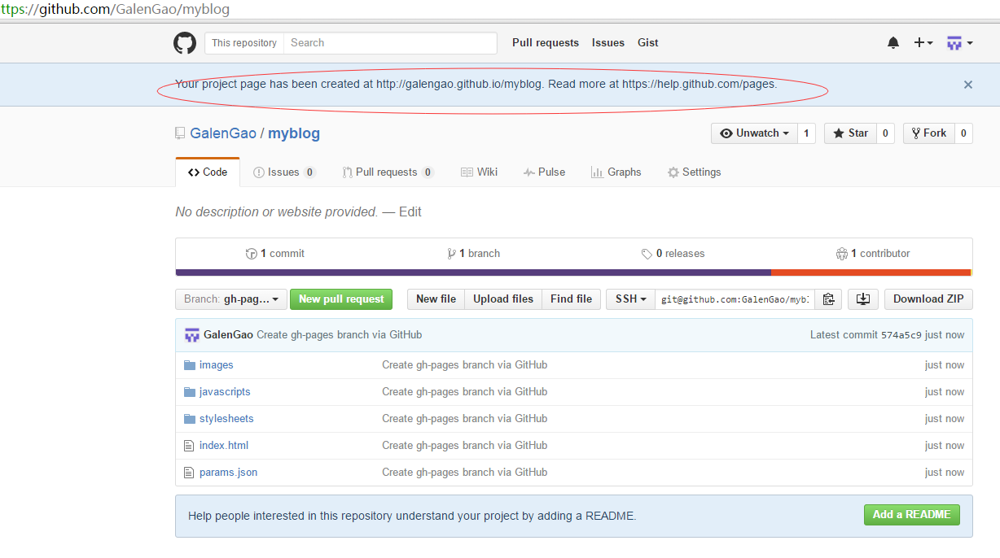
复制上面的地址http://galengao.github.io/myblog在新窗口中打开找到SSH后的连接
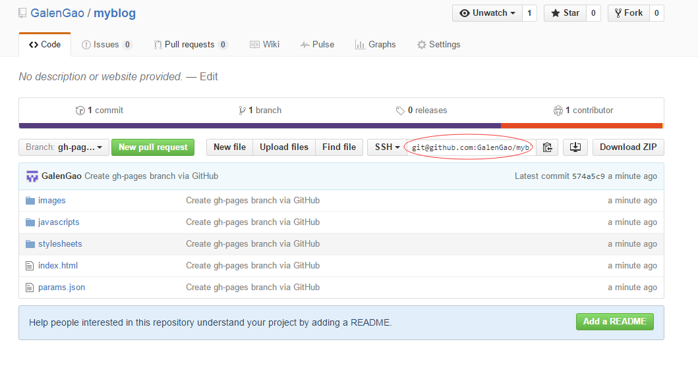
然后复制那个连接，在本地克隆
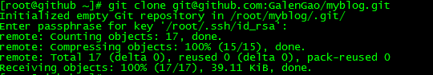
gem install jekyll
如果要换镜像，如下：
gem sources --remove https://rubygems.org/
gem sources -a https://ruby.taobao.org/
gem sources -l、
如果安装jekyll出现如下错误时：
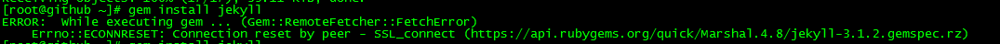
解决升级gem，移除国外镜像，用国内的。
rvm rubygems latest
gem sources --remove https://rubygems.org/
gem sources -a https://ruby.taobao.org/
gem sources -l
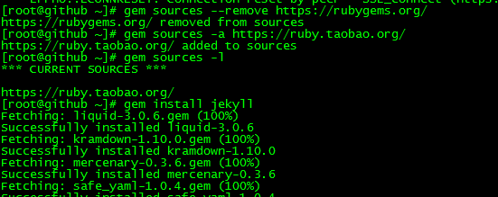
jekyll serve -H192.168.10.145
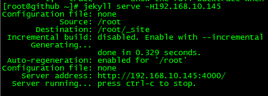 这时浏览器会看到如下信息： 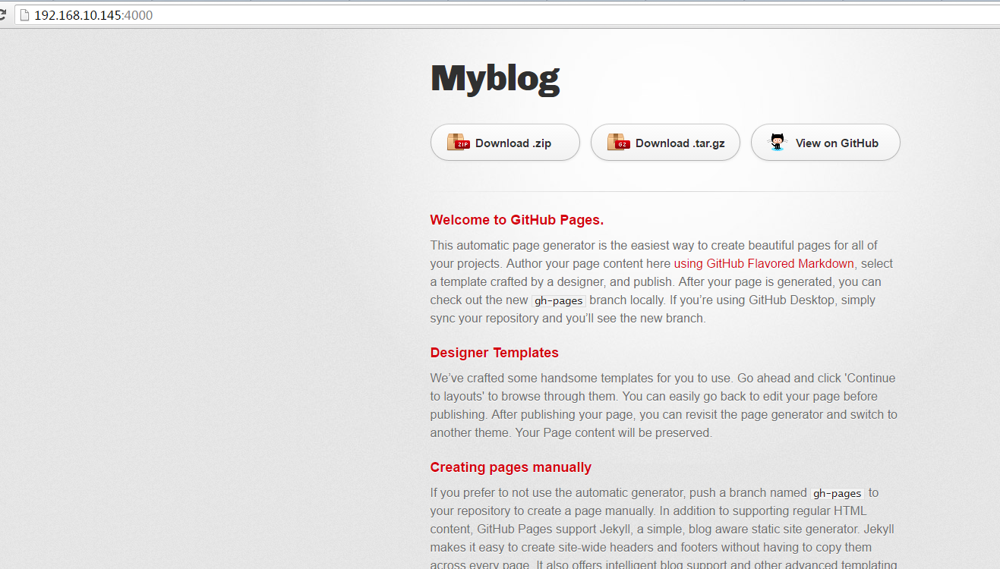
下载地址http://jekyllthemes.org/
到网站去任意下载一个模板，然后上传到本地服务器。如我下载的
unzip unifreak.github.io-master.zip
cd unifreak.github.io-master.zip
把里面的内容全部拷入到我上面的项目下
cp -rf * ../GalenGao.github.io/
git add .
git commit -m "first post"
git push origin master